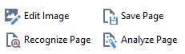
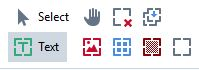

AFR Interface
Learn about the main elements of the program interface
When you open ABBYY FineReader, you should see the OCR interface. If instead you see the Task Window, with a list of tasks beginning with View and Edit PDF Documents, open the options link at lower-left and select . Close the Task window and you will see the OCR Editor.
Begin by familiarizing yourself with the different sections of the OCR interface.
- The Pages pane shows thumbnails of every page in the OCR project. It also gives basic information about individual pages with badges and color tints.
- The Quick Access bar is an optional, customizable toolbar for commands we use most.
- The Main toolbar is not customizable but contains buttons for basic tools, like opening projects, selecting the recognition language and output options.
- The Image pane displays the original image to be scanned. In this window, you draw boxes for text recognition areas.
- The Zoom pane does just what it sounds like: it gives you an enlarged view of the line of text in the Image pane you are focussing on. Below it is a box enabling you to control the enlargement.
- The Text pane shows the results of the current OCR process and is used for proofreading. You can edit text in this window, and your corrections are saved with the Project.
- In addition, immediately above the Image pane is a panel with two groups of
icons.
- The four on the left are actions for saving, analyzing, and recognizing the page. 
- The larger group on the right are actions for managing text, image, and table boxes. 
1 Source: © ABBYY, http://help.abbyy.com/en-us/finereader/14/ocrwindow